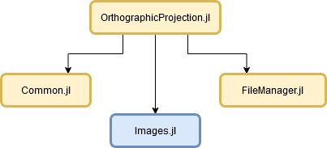

OrthographicProjection
OrthographicProjection.jl is a Julia library created for two main purposes:
- generate orthophoto of a point cloud with respect to a chosen plane,
- segment a point cloud.
Getting started
Installation
To install a Julia package you have to use the package manager Pkg. Enter the Pkg REPL by pressing ] from the Julia REPL and then use the command add.
This package is not in a registry, it can be added by instead of the package name giving the URL to the repository to add.
julia (@v1.4) pkg> add https://github.com/marteresagh/OrthographicProjection.jl
Dependencies

OrthographicProjection.jl has the following dependencies:
Structure of documentation
This documentation is a collection of several parts:
- The "Description" part explains the algorithm implemented.
- The "Results" part shows you the results of a specific job.
- The "Script" part describes how to launch a job from command line.
- The "References" part is a collection of API function references provided by OrthographicProjection.